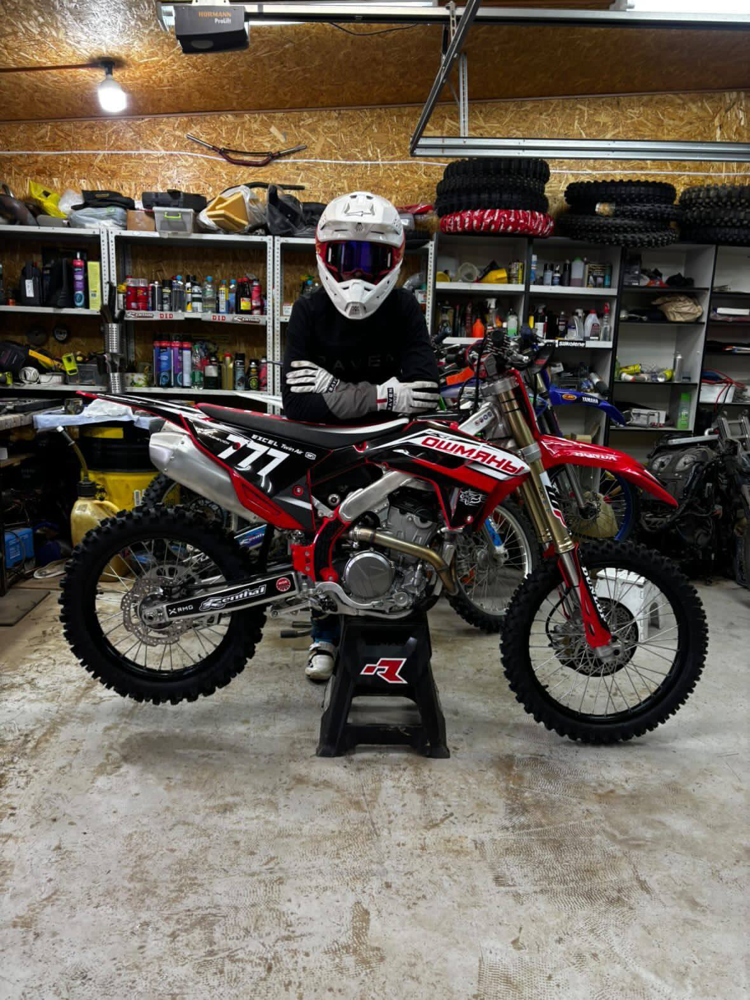

Чистый адреналин, железная воля к победе и максимальный газ на полную мощность в классе 250 см³ под культовым номером 777.
Связаться в Instagram
Никита начал свой путь в Ошмянах, сев за руль квадроцикла всего в 3 года. К 4 годам он уже уверенно управлял двухколесной техникой.
Сегодня, обладая официальным спортивным званием Кандидата в мастера спорта (КМС), он успешно конкурирует на сложнейших треках. Спортивный напор и многолетний опыт ведут его к новым вершинам в мотокроссе.
Спортивное звание
Текущий класс заездов
Завоевание престижного титула Чемпиона Республики Беларусь. Успешные выезды и призовые подиумы на треках Латвии, Литвы, Эстонии и России.
Выход на серьезный международный уровень. Масштабное участие в этапах Чемпионата Европы с прохождением жестких отборов в Польше и Латвии.
Закрепление статуса одного из сильнейших юниоров страны. Уверенное завоевание серебряного подиума на культовой домашней трассе в Ошмянах и успешное прохождение сложнейших песчаных треков.
Переход в бескомпромиссный взрослый дивизион. Высокие результаты на этапах Чемпионата Республики Беларусь и яркое международное выступление в заездах на трассе спортивного комплекса «Игора Драйв».
Текущая категория доминирования. Уверенное удержание лидерских позиций в топ-3 текущего личного зачета Чемпионата Республики Беларусь, а также зрелищное выступление на международном Кубке ШОС.